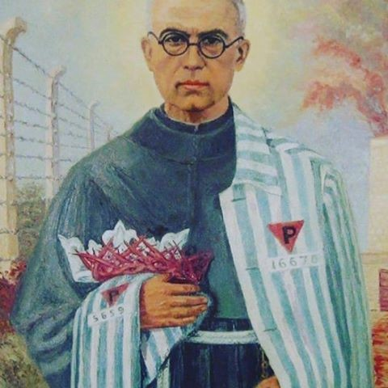

<!DOCTYPE html>
<html lang="pl">

<head>
    <meta charset="UTF-8">
    <meta http-equiv="X-UA-Compatible" content="IE=edge">
    <meta name="viewport" content="width=device-width, initial-scale=1.0">
    <script src="https://kit.fontawesome.com/c5be158232.js" crossorigin="anonymous"></script>
    <link rel="stylesheet" href="../css/style.css">
    <title>Myśli Nowoczesnego Polaka</title>
</head>

<body>
    <div class="book-topBar">
        
        <p class="book-topBar-content">„Nie zmoga nas te cierpienia, tylko przetopia i zahartuja. Wielkich potrzeba
            ofiar naszych, aby okupic szczescie i pokojowe zycie tych, co po nas beda.“.
        </p>
        <h1 class="section-title">Czeg uczy nas św. Maksymilian Maria Kolbe <br> Rys biograficzny Świętego</h1>
    </div>
    <div class="book-content-container">

        <h1 class="section-title" id="#1">Rys biograficzny Świętego</h1>

        <div class="chapter-container" id="1">

            <div class="inside-navigation">
                <a href="#tab1">1</a>
            </div>

            <p class="chapter-content">Rajmund Kolbe urodził się jako drugie z pięciorga dzieci państwa Kolbe dnia 8
                stycznia 1894 roku w Zduńskiej Woli koło Łodzi. Został ochrzczony w kościele
                parafialnym pw. Wniebowzięcia NMP. Jego rodzice na początku trudnili się
                tkactwem chałupniczym, ale z powodu trudnych warunków materialnych musieli
                zamknąć swój warsztat, po czym przenieśli się do Łodzi, a następnie do Pabianic.
                Tam jego ojciec Juliusz pracował w fabryce, natomiast matka Marianna prowadziła
                mały sklep i trudniła się położnictwem. Państwo Kolbe należeli do III Zakonu św.
                Franciszka (forma zakonu dla osób świeckich). Dzieci Kolbów pierwsze nauki
                pobierały w rodzinnym domu, gdzie ojciec wpajał im wartości patriotyczne i
                chrześcijańskie. </p>
            <p class="chapter-content">Podczas odwiedzin w kościele w Pabianicach dwunastoletniemu Rajmundowi
                ukazała się Matka Boża trzymająca 2 korony: białą oznaczającą czystość oraz
                czerwoną symbolizującą męczeńską śmierć. Młody Kolbe przyjął obie korony. Po
                tym fakcie Matka Boża mile na niego spojrzała i znikła. Był to jeden z
                najistotniejszych momentów w życiu przyszłego męczennika miłości.</p>
            <p class="chapter-content">W 1907 roku pod wpływem misji franciszkanów prowadzonych w Pabianicach,
                Rajmund razem ze swoim starszym bratem Franciszkiem postanowił wstąpić do
                zakonu. Przedarli się do zaboru austriackiego, do Lwowa i tam wstąpili do małego
                seminarium franciszkanów konwentualnych. Pewnego dnia przebywając w katedrze
                lwowskiej Rajmund poświęcił się Maryi, obiecując, że będzie dla Niej walczył (tę
                walkę widział z bronią w ręku). Kiedy Rajmund wraz z bratem chcieli zaciągnąć się
                do wojska odwiedziła ich matka i powiedziała, że razem z ojcem postanowili oddać
                się na wyłączną służbę Bogu. Ta wiadomość spowodowała zmianę decyzji u
                młodego Kolbego, postanowił zostać we Lwowie i niebawem wstąpił do nowicjatu
                przyjmując imię Maksymilian.
            </p>
            <p class="chapter-content">W 1912 roku Maksymilian kończy szkołę średnią w Krakowie, a następnie
                przełożeni będący pod wrażeniem zalet jego umysłu i charakteru skierowali go na
                kolejne studia do Rzymu, gdzie ukończył z tytułem doktora teologię oraz filozofię.
                Oprócz tego Kolbe ujawniał także duże zdolności matematyczno-fizyczne, napisał
                min. pracę na temat latającego pojazdu międzyplanetarnego. W 1914 roku ojciec
                Kolbe składa uroczyste śluby zakonne oraz obiera na drugie imię Maria, co jest
                wyrazem pełnego zawierzenia się NMP. </p>
            <p class="chapter-content">Podczas studiów Maksymilian był świadkiem obchodów 200-lecia powstania
                masonerii i 400-lecia wystąpienia Marcina Lutra. Żydowski burmistrz Rzymu został
                wtedy wielkim mistrzem masońskim i zarządził świętowanie tych rocznic czarnymi
                flagami giordanobrunistów, na których przedstawiony był Lucyfer depczący Św.
                Michała Archanioła. To wydarzenie bardzo poruszyło o. Kolbe i jednocześnie</p>
            <p class="chapter-content">natchnęło do utworzenia specjalnego bractwa złożonego z najbardziej oddanych i
                bojowych jednostek Maryi Niepokalanej. Po naradzie ze spowiednikiem i uzgodnieniu z przełożonymi
                szczegółów działania
                założył w 1917 roku Rycerstwo Niepokalanej. Oto krótki regulamin tej formacji:</p>
            <p class="chapter-content">Cel:</p>
            <p class="chapter-content">Starać się o nawrócenie grzeszników, heretyków, schizmatyków itd., a szczególnie
                masonów, oraz o uświęcenie wszystkich pod opieką i za pośrednictwem
                Niepokalanej</p>
            <p class="chapter-content">Warunki działalności:</p>
            <p class="chapter-content">Całkowite ofiarowanie siebie samego Niepokalanej jako narzędzia w Jej rękach oraz
                noszenie Cudownego Medalika</p>
            <p class="chapter-content">Środki:</p>
            <p class="chapter-content">1. W miarę możności raz na dzień zwrócić się do Niepokalanej z aktem strzelistym:
                O Maryjo, bez grzechu poczęta, módl się za nami, którzy się do Ciebie uciekamy, i za
                wszystkich, którzy się do Ciebie nie uciekają, a zwłaszcza za masonami.</p>
            <p class="chapter-content">2. Wszelkie godziwe środki, na jakie pozwala stan, warunki i okoliczności, co
                poleca
                się gorliwości i roztropności każdego, a zwłaszcza Cudowny Medalik.
            </p>
            <p class="chapter-content">W 1918 roku o. Kolbe przyjmuje święcenia kapłańskie, następnie w 1919 wraca do
                Polski i zaczyna werbować ochotników do Rycerstwa Niepokalanej. W tym czasie
                zaczęły się pojawiać u niego pierwsze objawy gruźlicy, z powodu której kilka razy
                musiał się leczyć. Niebawem rozpoczął w Krakowie wydawanie Rycerza
                Niepokalanej, lecz z powodu obawy, że Kolbe zadłuży klasztor, przełożeni przenieśli
                go do Grodna, gdzie również zajął się działalnością wydawniczą. Kilka lat później
                ciężka praca przyniosła znaczące efekty, w 1927 roku Rycerz Niepokalanej
                wydawany był w liczbie 70 000 egzemplarzy, a liczba członków Rycerstwa
                Niepokalanej sięgała do 126 tys. członków. W swoich tekstach o. Kolbe wielokrotnie
                demaskował sposoby działania masonów oraz ukazywał niekorzystny wpływ
                Żydów na polskie społeczeństwo. Widział w nich ludzi, którzy propagują zepsucie
                moralne i walczą z Kościołem. Jasno, z pozycji katolickiej krytykował socjalizm,
                chwalił pracowitość, tłumaczył czym jest prawdziwa istota wolności, równości i
                braterstwa jako kontra do fałszywie rozumianej wolności z czasów rewolucji
                francuskiej. Demaskował w bardzo konkretny sposób błędne działanie socjalizmu na
                przykładzie Rosji sowieckiej, kiedy to urzędnicy państwowi opływali w luksusy, a
                zwykli ludzie umierali na ulicach z głodu.</p>

            <p class="tab" id="tab1">1</p>

            <p class="chapter-content">W 1927 roku o. Kolbe przeniósł się do Warszawy i na podarowanej przez księcia
                Jana
                Druckiego-Lubeckiego ziemi w Teresinie, 42 km od stolicy założył klasztor o nazwie
                Niepokalanów, który w przyszłości miał się stać największym klasztorem na świecie.
                Sprzedaż czasopism wydawanych przez ojca Kolbego rosła, dla przykładu Rycerz
                Niepokalanej osiągnął imponujący nakład w liczbie 750 000 egzemplarzy. Kolbe
                kierowany chęcią pozyskania jak największej liczby dusz dla Niepokalanej
                doprowadził do założenia własnej radiostacji, co na tamte czasy było nie lada
                wyzwaniem. Tak wielkie sukcesy spędzały sen z powiek przeciwnikom Kościoła, w
                prasie wolnomyślicielskiej często próbowano ośmieszyć dzieło o. Kolbe, lecz te
                wszystkie ataki były skutecznie odpierane przez zakonnika i jego otoczenie.</p>
            <p class="chapter-content">W 1930 roku o. Kolbe wraz z kilkoma współbraćmi opuścił Niepokalanów i udał się
                na misje do Japonii. Udało mu się założyć drugi Niepokalanów w mieście Nagasaki.
                Otworzył tam nowicjat i małe seminarium, a także zaczął wydawać po japońsku
                Rycerza Niepokalanej. Po jakimś czasie musiał powrócić do Ojczyzny by zażegnać
                kryzys panujący w Niepokalanowie pod Warszawą. Gdy wszystko zaczęło wracać
                do normy, nadeszła wojna. W dniu 19 września 1939 roku niemiecki okupant
                przystąpił do likwidacji Niepokalanowa. Maksymilian Kolbe wraz ze współbraćmi
                został aresztowany i umieszczony w obozie w Amtlitz, a następnie w Ostrzeszowie.
                W święto Niepokalanego Poczęcia Maryi, 8 grudnia tego samego roku został
                uwolniony, po czym wrócił do Niepokalanowa i zaczął przygotowywać schronienie
                dla osób wysiedlonych z województwa poznańskiego (z 3000 wszystkich uchodźców
                2000 stanowili Żydzi). Chcąc odbudować straty wyrządzone przez Niemców
                otworzył tam warsztaty naprawy zegarków i rowerów, kuźnię, warsztat krawiecki,
                blacharnię oraz dział sanitarny. 19 lutego 1941 roku o. Kolbe został ponownie
                aresztowany i wywieziony na Pawiak, stamtąd 25 maja tego samego trafił do
                Oświęcimia. Jego numer obozowy to 16670. Mimo, iż sam bardzo cierpiał, pocieszał
                współwięźniów, modlił się za nich oraz dzielił się z nimi swoimi skromnymi
                posiłkami. </p>
            <p class="chapter-content">W lipcu 1941 roku uciekł jeden z osadzonych, przez co komendant obozu zwołał na
                apel cały blok i skazał na śmierć głodową co dziesiątego więźnia. Gdy jeden ze
                skazanych - Franciszek Gajowniczek, zaczął się żalić, że żona i dzieci sobie bez niego
                nie poradzą, Maksymilian wystąpił z szeregu z prośbą, aby to on mógł zastąpić
                nieszczęśnika. W ten sposób o. Kolbe wraz z dziewięcioma innymi towarzyszami
                trafił do bloku numer 13, zwanego blokiem śmierci. Pod wpływem o. Kolbe blok ten
                był przepełniony modlitwami i pobożnymi pieśniami. Święty przeżył bez wody i
                chleba 2 tygodnie, po czym 14 sierpnia 1941 roku, w wigilię Wniebowzięcia
                Najświętszej Maryi Panny został dobity zastrzykiem z fenolu, a jego ciało zostało
                spalone w krematorium. Męczennik Miłości, jak tytułuje się o. Maksymiliana Kolbe,
                zaufał Niepokalanej do końca. W październiku 1971 roku Maksymilian Maria Kolbe
                został beatyfikowany przez papieża Paweł VI, a 10 października 1982 roku Ojciec
                Święty Jan Paweł II ogłosił go świętym. Na Jasnej Górze dnia 9 kwietnia 2016r. został
                patronem Młodzieży Wszechpolskiej.</p>
            <p class="chapter-content">Swoją metodą działania wobec wszystkich ludzi o. Kolbe pokazuje jak należy dbać o
                swój naród – walczyć ze swoimi słabościami, troszczyć się o drugiego człowieka,
                bezkompromisowo podchodzić do wyznawania Świętej Wiary Katolickiej oraz
                bezgranicznie ufać Maryi. Po dziełach o. Kolbe można wywnioskować jaką potęgą
                jest oddanie się w opiekę Niepokalanej. Powinien on być dla nas wzorem jak
            </p>
            <p class="chapter-content">prowadzić pracę organiczną wobec wszystkich warstw społecznych oraz jakie
                powinniśmy mieć podstawy metafizyczne by nasze działania miały sens. Nade
                wszystko powinniśmy pamiętać by nigdy się nie poddawać i szukać wszelkich
                sposobów na realizowanie konkretnych działań. Dzięki łasce Bożej o. Kolbe stworzył
                coś z niczego, jego upór i zawziętość przyniosły stokrotne owoce. W naszym
                przypadku to również jest możliwe, musimy być pracowici i wymagać od siebie, a
                także jednocześnie prosić Boga o łaskę właściwego postępowania w danej sytuacji.
                Jeśli będziemy kierować się zasadami Ewangelii w życiu codziennym i tzw. pracą dla
                Narodu jak robił to nasz Patron hasło ‘Jutro należy do nas’ będzie się stawać
                rzeczywistością, a nie tylko pustym frazesem wykrzykiwanym raz na jakiś czas.</p>
            <p class="chapter-content chapter-content-to-right">Łukasz Kurjaniuk</p>
        </div>

        <h1 class="section-title" id="#2">Czego uczy nas św. Maksymilian Maria Kolbe</h1>

        <div class="chapter-container" id="2">
            <p class="chapter-content">Ważną częścią katolickiego kultu świętych jest studiowanie ich życiorysów i
                wyciąganie na ich podstawie konkretnych lekcji i wniosków dla swojego życia.
                Maksymilian Maria Kolbe jest świętym dość szczególnym, ponieważ jego osiągnięcia
                dotyczą różnych wymiarów i sfer życia. Można na niego patrzeć jak na męczennika,
                ascetę, mistyka czy misjonarza, ale również jak na wzór organizatora czy działacza.
                Św. Maksymilian może być przykładem dla wierzących, pokrzepieniem dla
                wątpiących i poszukujących, ale również patrząc czysto po ludzku – autorytetem dla
                każdego, niezależnie od wiary i stosunku do Pana Boga. Przyjrzyjmy się więc trzem
                naukom, jakie dał nam św. Maksymilian: pobożności, sztuki dobierania metod walki
                o swoje idee oraz radykalizmu. </p>
        </div>

        <h1 class="section-title" id="#3">Pobożność i życie wewnętrzne</h1>

        <div class="chapter-container" id="3">

            <div class="inside-navigation">
                <a href="#tab2">2</a>
            </div>

            <p class="chapter-content">Nie zrozumiemy dokonań św. Maksymiliana Kolbe, jeśli nie przyjrzymy się jego
                pobożności i życiu wewnętrznemu. Bóg jest celem samym w sobie, nie potrzebuje
                dodatkowych uzasadnień. Przypominamy o tym, żeby Czytelnik nie zapomniał o
                właściwej hierarchii – my jesteśmy dla Boga, nie odwrotnie. Nie zmienia to jednak
                faktu, że z wiary, pobożności i bogatego życia duchowego możemy czerpać siłę,
                natchnienie i osiągać rzeczy wielkie. Innymi słowy, wiara się opłaca, nie tylko w
                wymiarze wiecznym, ale często również tym ziemskim, ludzkim. Tak było w
                przypadku św. Maksymiliana – nie ulega wątpliwości, że bez siły czerpanej z
                głębokiej wiary, nie osiągnąłby on tak wiele.</p>
            <p class="chapter-content">Maksymilian szczególnym kultem otoczył Maryję. W modlitwach czy w publicystyce
                mówił o niej „Niepokalana” i od tego miana nazwę wzięły największe dzieła
                Maksymiliana. „Niepokalana” podkreśla szczególne przywiązanie do dogmatu o
                Niepokalanym Poczęciu Najświętszej Maryi Panny. Prawda ta przez wieki, jeszcze
                na długo przed oficjalnym ogłoszeniem dogmatu w 1854 r., była szczególnie żywa
                wśród franciszkanów. Stwierdzenie, że Maryja była wolna od grzechu
                pierworodnego oznacza, że zajmuje ona wyjątkowe miejsce wśród ludzi i szczególną
                pozycję u Boga. Św. Maksymilian uważał ją za najlepszą pośredniczkę między
                Bogiem a człowiekiem. Za św. Bernardem powtarzał, że Bóg sobie pozostawił
                sprawiedliwość, zaś miłosierdzie oddał Maryi. Z tą myślą wszelkie prośby zanosił
                właśnie do Niej.</p>
            <p class="chapter-content">Kult Niepokalanej, jak i całą pobożność, wyniósł Maksymilian z domu rodzinnego.
                W skromnej izdebce rodziny Kolbów nie brakło miejsca na ołtarzyk dla Maryi, przy
                którym paliły się świece. Ciężko pracujący rodzice Maksymiliana znajdowali czas na
                codzienną Mszę Świętą, pomimo pracy od szóstej rano do dziewiętnastej.
            </p>
            <p class="chapter-content">Maksymilian nasiąkał tą atmosferą i wierzyć było dlań czymś tak naturalnym, jak
                oddychać</p>
            <p class="chapter-content">Życie wewnętrzne św. Maksymiliana nie ograniczało się bynajmniej do tradycyjnej
                pobożności i emocjonalnej więzi z Maryją. Jego wiara była solidne ugruntowana w
                wiedzy i opierała się na rozumie i systematyczności. Wiele o Maksymilianie mówi
                fakt, że już jako młody zakonnik stworzył dla siebie „regulamin życia”. Był to zbiór
                dwunastu najważniejszych cytatów i myśli, którymi kierował się franciszkanin.
                Regularnie (co miesiąc) czytany i przypominany stał się fundamentem na całe życie.
                Można domyślać się, że takie comiesięczne refleksje były okazją do przeglądu i
                rozliczenia samego siebie. Dziś wytyczanie celów i regularne ich weryfikowanie
                nazywa się rozwojem osobistym, a za szkolenia w tym temacie różnego rodzaju
                „trenerzy” pobierają solidne pensje. Nie pierwszy to przypadek, kiedy w modnym i
                nowoczesnym opakowaniu podaje się stare, tradycyjne prawdy</p>
            <p class="chapter-content">Pierwszy punkt regulaminu Maksymiliana pokazuje, jak wysoko mierzył świeżo
                upieczony kapłan: „Muszę być świętym jak największym”. Zwięźle i na temat.
                Świętość brzmi dumnie i górnolotnie, w Kościele oznacza po prostu bezwzględne
                realizowanie Bożych przykazań. „Święty nie jest dziadygą, ciamajdą do popychania.
                Święty musi być dziarski, rzutki, pełen inicjatywy” – wyjaśniał już na innym etapie
                swojego życia Maksymilian i to zdanie kapitalnie uchwyca kluczową cechę
                pobożności zakonnika. Kłóci się ona z panującym stereotypem katolika jako
                nudnego, bojaźliwego i zniewieściałego świętoszka. Maksymilian przy wielu
                okazjach używał twardego, męskiego, militarnego języka, w którym nie pozostawiał
                wątpliwości – święty to znaczy mężny, szlachetny, oddany sprawie i ideałom, w
                które wierzy.</p>

            <p class="tab" id="tab2">2</p>

            <p class="chapter-content">Kolejne punkty regulaminu w prostych słowach podkreślają m.in. wagę
                systematyczności („9. Przygotowanie, działanie, zakończenie”), walki z
                marnowaniem czasu (3. „Gorącością wynagródź czas stracony”), pracowitości i
                unikania rozproszeń (6. „Czyń co czynisz; na wszystko inne, dobre czy złe, nie
                zwracaj uwagi”) czy poczucia misji i odpowiedzialności (4. „Nie opuszczę: a)
                żadnego zła bez naprawienia go (zniszczenia go) i b) dobra, które bym mógł zrobić,
                powiększyć lub jakikolwiek inny sposób do niego przyczynić”).</p>
            <p class="chapter-content">Takie postanowienia powziął dwudziestoczteroletni zakonnik i z żelazną
                konsekwencją je realizował. Włącznie z postanowieniem o świętości.</p>
            <p class="chapter-content">Skąd siły? Maksymilian był przecież zwykłym śmiertelnikiem, podatnym na
                lenistwo i inne ludzkie słabości. Nieraz może się wydawać, że święci to inni ludzie,
                pełni szczególnych łask, bez których trudno im dorównać. Franciszkanin nie był
                jednak nadczłowiekiem, po prostu dzięki współpracy z Bogiem podejmował walkę
                życia codziennego i małymi czynami wykuwał swoją wielkość i świętość.</p>
            <p class="chapter-content coursive">Ranne rozmyślanie jest planem walki na cały dzień, rachunki sumienia są
                przeglądem
                walki.
                Nieprzyjaciel duszy stara się skradać te ćwiczenia duchowne. Bez nich jednak żyć nie można.
                Kiedy jest nam nieraz ciężko to dobrze sobie przypomnieć, że życie jest krótkie. Wróg duszy
                stara się zająć ją jak najwięcej rzeczami zewnętrznymi, żeby się zachłysnęła i do śmierci tak
                doszła. Dusza, która ma przed oczami swój cel, dba o skupienie wewnętrzne, żeby nie stracić
                natchnień z góry, żeby być narzędziem w rękach Niepokalanej. Życie wewnętrzne, nie
                zewnętrzne, jest jej treścią.</p>
            <p class="chapter-content">Maksymilian był rygorystyczny nawet w najmniejszych rzeczach.
            </p>
            <p class="chapter-content coursive">Z początku dusza nie zważa na te drobnostki, na przykład rano nie
                wstanie
                zaraz – [ale]
                choćby kilka sekund [później]. (…) W sprawie uświęcenia dusz trudno nazwać cokolwiek
                rzeczą małą, gdyż ze względu na tak ważny cel – wszystko jest bardzo ważne. (…) Dusza,
                która opuszcza się w małych rzeczach, czuje z początku wyrzuty sumienia. Po jakimś czasie
                wyrzuty ustają, bo się przyzwyczai do swoich błędów.</p>
            <p class="chapter-content">Swojej imponującej bez wątpienia samodyscypliny, wewnętrznej organizacji i
                panowania nad słabościami Maksymilian nie uważał jednak za swoją zasługę. Nie
                byłoby to możliwe bez modlitwy, całkowitego oddania się Matce Bożej w opiekę.
                Maksymilian, choć był osobą oczytaną i inteligentną, wiedział, że jego siła i mądrość
                nie bierze się w pierwszej kolejności z wykształcenia. Za św. Tomaszem z Akwinu
                powtarzał, że więcej nauczył się od Krzyża niż z książek. </p>
            <p class="chapter-content">Chciałoby się rzec, że św. Maksymilian był osobą kompletną. Głęboko wierzył, ale
                nie czekał na mannę z nieba, lecz ciężko pracował nad swoim charakterem. Był
                wykształcony, światły i niewątpliwie cenił ludzi z szerokimi horyzontami, ale
                rozumiał, że mądrość tego świata nie wystarcza. Nie szczędził sobie trudu,
                podejmował walkę wewnętrzną i zwyciężał, ale wiedział, że bez modlitwy i wiary
                nie znaczyłby nic.</p>
        </div>

        <h1 class="section-title" id="#4">Metody Walki</h1>

        <div class="chapter-container" id="4">

            <div class="inside-navigation">
                <a href="#tab3">1</a>
                <a href="#tab4">2</a>
                <a href="#tab5">3</a>
            </div>

            <p class="chapter-content">Maksymilian nieustannie mówił i pisał o walce jako nieodłącznej części czy wręcz
                treści życia. W kategoriach walki rozpatrywał nie tylko osobiste zmagania
                wewnętrzne, ale również starania o uczynienie świata lepszym. Wrogów nazywał
                wprost, po imieniu i bez poprawności politycznej. Nie miał złudzeń – czynienie
                dobra to także walka z nieprzyjacielem, nie tylko Szatanem, ale także z tymi, którzy
                mu służą, choćby nieświadomie. Był niewątpliwie przedstawicielem Kościoła
                Walczącego, Ecclesia Militians. Pojęcie to w dzisiejszym Kościele, który niestety
                niekiedy przynajmniej toleruje mentalność pacyfistyczną, zostało zastąpione przez
                bardziej nijaki Kościół Pielgrzymujący. Dziś militarna retoryka wielu uwiera, w
                czasach Maksymiliana pobudzała do czynu, myśli i świętości.
                Cel walki Maksymiliana był jasny i często podkreślany – zdobyć jak najwięcej dusz.
                Zgodnie z nauczaniem Kościoła, podstawowym celem doczesnego życia każdego
                katolika jest dążenie do zbawienia, zaś troska o zbawienie innych jest najwyższym
                wymiarem miłości bliźniego. Ta misyjność, poczucie odpowiedzialności i żywa
                apologetyka1 były treścią życia św. Maksymiliana
            </p>
            <p class="chapter-content">Maksymilian może być nauczycielem dla wszystkich, chcących dzielić się dobrymi
                ideami z innymi. Nie poprzestawał on bowiem na gorliwej modlitwie, ale całe życie
                z pełnym zapałem doskonalił metody nawracania. Można je podzielić na dwie
                kategorie: bezpośrednią i pośrednią. </p>
            <p class="chapter-content">Przez metodę bezpośrednią rozumiemy po prostu tysiące rozmów, jakie
                Maksymilian odbył w trakcie swego życia. Treść wielu z nich zachowała się w jego
                zapiskach, dzięki czemu możemy inspirować się czymś, co nazywa się
                „ewangelizacją pociągową”, uprawianą przez franciszkanina przez całe życie. Jak
                można się domyślić, cała rzecz polegała na rozmowach z przypadkowymi ludźmi,
                toczonych głównie podczas licznych podróży pociągami. Sztukę takiego
                „nawracania przy okazji” można streścić w dwóch prostych słowach: chcieć i
                potrafić. Chcieć, a więc stwarzać okazje, zagadywać, nie zrażać się
                niepowodzeniami, nie tracić żadnej szansy na przekazanie swoich ideałów. Potrafić,
                ponieważ same dobre chęci nie wystarczą do dyskusji z obcymi ludźmi. Trzeba być
                przygotowanym zarówno mentalnie (odpowiednie podejście, dostosowanie do
                konkretnego rozmówcy, użycie miękkiej perswazji, wykorzystanie swoich zalet,
                uroku etc.) jak i merytorycznie (twarda wiedza, przemyślane, gotowe argumenty).
            </p>
            <p class="chapter-content">Tak mówił o tym sam Maksymilian:</p>
            <p class="chapter-content coursive">Z własnego doświadczenia wiem, że nie jest to samo nauczyć się czegoś
                dla szkoły, a być
                przygotowanym każdemu z jakiejkolwiek sfery społeczeństwa rzecz tak przedstawić, aby trafić
                do jego przekonania. Niech więc Bóg zachowa, aby członek MI2, będąc gdzieś w towarzystwie
                lub pociągu, miał zbyć jakiś zarzut przeciw religii odpowiedzią wymijającą i tak osłabić wiarę
                u słuchających.
            </p>
            <p class="chapter-content">Twórca Niepokalanowa swoją „pociągową ewangelizację” uprawiał w lekkim stylu.
                Nie wchodził w ostre spory, nie wygłaszał swoich tez ex cathedra, z patosem. Czasem
                można odnieść wrażenie, że dyskutanci przyjmujący taki styl zapominają o celu
                takich rozmów. Nie chodzi przecież o wygłoszenie swoich poglądów, występ dla
                samego występu, podbudowanie własnej samooceny abstrakcyjnym wywodem, czy
                w końcu wyśmianie lub zbesztanie rozmówcy. Skuteczność mierzy się ilością
                przekonanych. I znów, rzecz nie w zupełnej zmianie stanowiska interlokutora – to
                następuje niezmiernie rzadko po jednej rozmowie. Za sukces należy poczytywać
                zasianie ziarna niepewności, skłonienie do myślenia czy choćby ocieplenie </p>
            <p class="chapter-content">wizerunku grupy, którą reprezentujemy. Nigdy nie wiemy, kiedy i w jaki sposób
                rzucone przy okazji ziarno wykiełkuje. Franciszkanin w każdym człowieku, z
                którym przyszło mu rozmawiać, nawet najodleglejszym ideowo, widział przede
                wszystkim nie wroga, ale duszę do nawrócenia, parę rąk do pozyskania dla sprawy.</p>
            <p class="chapter-content">W rozmowie z ateistą o istnieniu Boga i pochodzeniu świata Maksymilian zagajał:
            </p>
            <p class="chapter-content coursive">Ten metal
                z okładki sam przypadkiem oderwał się w kopalni, sam dziwnym trafem przetopił się,
                przeczyścił i uformował wedle obecnego kształtu. Napis także przypadkiem się na nim wyrył.
                Szkiełko również przypadkiem się przetopiło i przyszlifowało?</p>

            <p class="tab" id="tab3">1</p>

            <p class="chapter-content">Gdy ateista przyznał, że
                uznałby, iż człowiek ów cierpi na zboczenie umysłu, Maksymilian kontynuował
                wywód, dochodząc do dowodu na istnienie praprzyczyny wszystkich rzeczy, którą
                jest Bóg. Wiemy, że argument ten, jest jednym ze słynnych dowodów św. Tomasza z
                Akwinu na istnienie Boga. Św. Maksymilian potrafił złożone teologiczne tezy
                tłumaczyć na język praktyczny.</p>
            <p class="chapter-content">O innej podróży pisał</p>
            <p class="chapter-content coursive">W drodze do Włocławka znalazłem się w wagonie między innymi w
                towarzystwie jednego
                żyda (cywilizowanego, bez pejsów), żydóweczki, protestanta, jednego katolika z Kaukazu i
                innych. Rozmyślnie kierowałem rozmowę na temat religijny. Nie męczyłem się jednak dużo,
                bo pozwalałem im dysputować między sobą i tylko prostowałem, gdzie było trzeba, albo i
                szerzej wyjaśniałem. Niepokalana dała mi trochę jasności umysłu, więc szło gładko.
                Żydóweczka łatwo przyznała przeciw protestantom, iż jedna tylko wiara może być dobra; w
                mowie o złych katolikach przyznano, że dobry katolik jest lepszy od dobrego niedowiarka itd.
                W końcu podróży zabrałem głos i zaokrąglając wszystko, przeszedłem od prawa natury,
                wybrania Izraela, od protestantyzmu do katolicyzmu, pokrótce uzasadniając, poleciłem
                wreszcie bardzo modlitwę, jako środek do uznania prawdy. Gdym już stał na peronie, jeden z
                poprzednich towarzyszy podróży (katolik) powiedział mi, że gdym wyszedł z wagonu, ów żyd
                (czy protestant) rzekł: „To mądry ksiądz”. Może tam Niepokalana zaczęła robić wyłom w
                duszy…</p>
            <p class="chapter-content">Podkreślmy – umiejętność rozmawiania z innymi nie została Maksymilianowi
                podarowana. On sam podkreślał oczywiście działanie łaski i siłę modlitwy, ale
                niewątpliwie ważna była również po prostu ciężka praca intelektualna – czytanie
                książek, rozważanie i przygotowywanie argumentów. Dla swoich podopiecznych
                przygotowywał ćwiczenia, podczas których klerycy wcielali się w role różnych
                rozmówców i szlifowali umiejętność dyskusji.</p>
            <p class="chapter-content">Maksymilian siał dobry ferment w umysłach i sercach rozmówców w najważniejszej
                ze sfer – religijnej. Jednak powinien on być wzorem dla wszystkich, którzy chcą
                szerzyć inne piękne idee. Pociągi były dla niego miejscem, gdzie najczęściej spotykał
                się z ludźmi innej wiary. Dla nas naturalnym środowiskiem podobnej pracy może
                być szkoła, uczelnia czy spotkania rodzinne</p>
            <p class="chapter-content coursive">Wobec tak potężnych ataków nieprzyjaciół Bożego Kościoła, czy wolno nam
                stać bezczynnie?
                Czy wolno tylko biadać i łzy ronić? – Nie! Pamiętajmy, że na sądzie Bożym zdamy nie tylko ścisły
                rachunek z czynności wypełnionych, ale także Pan Bóg policzy wszystkie dobre
                uczynki, które mogliśmy zdziałać, a zaniedbaliśmy. Na każdym z nas ciąży święty obowiązek,
                by stanął na szańcu i piersią własną odparł zapędy wroga.</p>
            <p class="chapter-content">Drugą metodę, którą Maksymilian walczył o dusze, można nazwać pośrednią.
                Franciszkanin wiedział, że ideowi wrogowie urośli w siłę przede wszystkim nie
                przez pociągowe konwersacje, lecz dzięki potężnym instytucjom – organizacjom,
                stowarzyszeniom, mediom. Świetnie zorganizowanemu złu należy przeciwstawić
                więc jeszcze lepiej zorganizowane zastępy ludzi dobrej woli. Wszystko oczywiście
                podbudowane ma być wiarą i modlitwą.</p>
            <p class="chapter-content coursive">Nieraz można usłyszeć zdanie: Cóż ja mogę? – Taka silna organizacja. –
                Mają grube kapitały
                itd. Zapomniał zapewne, co mówi św. Paweł: „Wszystko mogę w Tym, który mnie umacnia”</p>

            <p class="tab" id="tab4">2</p>

            <p class="chapter-content">Społeczne zaangażowanie franciszkanin wyniósł z domu. Jego ojciec, Juliusz, był
                aktywny w środowisku robotniczym, gdzie rozprowadzał endeckie pisma
                („Kiliński” i „Polak”). Związany był również ze środowiskami chadeckimi, z którymi
                współorganizował strajki robotnicze.
            </p>
            <p class="chapter-content">Pierwsze społeczne dzieło Maksymilian stworzył już jako młody,
                dwudziestojednoletni kleryk. Wraz z innymi młodymi braćmi założył Milicję
                (Rycerstwo) Niepokalanej – stowarzyszenie, w ramach którego z jednej strony
                modlono się za wrogów, z drugiej ostrzono na nich oręż – formowano i edukowano,
                tak duchownych jak i świeckich, uświadamiając zagrożenia i przygotowując się do
                walki z nimi. Bezpośrednim impulsem do powołania organizacji było rzymskie
                zetknięcie się z manifestacją masonerii, które święty opisywał następująco</p>
            <p class="chapter-content coursive">Gdy masoneria w Rzymie coraz śmielej występowała – wywiesiła swój
                sztandar przed oknami
                Watykanu, na sztandarze czarnym giordano-brunistów umieściła św. Michała Archanioła
                pod nogami Lucyfera i w ulotkach głośno występowała przeciw Ojcu Świętemu – powstała
                myśl założenia stowarzyszenia dla walki z masonerią i innymi sługami Lucyfera</p>
            <p class="chapter-content">Do walki piórem podchodził z ogromną żarliwością.</p>
            <p class="chapter-content coursive">Przedtem czułem, że nie potrafię
                się tym zająć, a teraz, może pod wrażeniem bezbożnictwa, ręce świerzbią. Proponował, by
                potęgować propagandę Rycerstwa Niepokalanej oraz opanować i wciągnąć do Rycerstwa
                agitatorów bezbożnictwa. </p>
            <p class="chapter-content">Masoneria do końca życia była dla Maksymiliana
                synonimem zła tego świata. Nie był w tym zresztą franciszkanin odosobniony –
                przeciw wolnomularzom i ich wpływom występowali wówczas papieże, kler,
                narodowi i konserwatywni myśliciele i politycy. I nawet jeśli w utożsamieniu całego
                zła tego świata z masonerią było nieco przesady, to jej przemożne wpływy i
                zaangażowanie przeciw Kościołowi i tradycyjnym wartościom nie podlegają
                dyskusji. Oceniając tak mocne akcentowanie kwestii masońskich, nie wolno więc
                popaść w błąd ahistorycyzmu poprzez przykładanie dzisiejszych miar do innej
                epoki. Masoneria co prawda nie zniknęła, ale jej wpływy wyraźnie osłabły, zaś
                podobną funkcję zaczęły pełnić inne, szersze środowiska i koła. Można zaryzykować
                tezę, że dziś Maksymilian z równym zapałem zwalczałby szerzący się liberalizm, postmodernizm czy
                marksizm kulturowy, które podobnie jak kiedyś
                wolnomularstwo są wymierzone przeciw tradycyjnym wartościom takim jak religia,
                rodzina czy naród. Następujące słowa franciszkanina odnoszące się do masonerii bez
                trudu jesteśmy w stanie odnieść do dobrze znanych, współczesnych środowisk:</p>
            <p class="chapter-content coursive">Posługują się przy tym całą plejadą zrzeszeń o najrozmaitszych nazwach i
                celach, które
                jednak pod ich wpływem szerzą obojętność religijną i osłabiają moralność. Na osłabienie tej
                ostatniej baczną oni zwracają uwagę w myśl powziętej uchwały: „My religii katolickiej nie
                zwyciężymy rozumowaniem, tylko psuciem obyczajów”. I toną dusze w powodzi literatury i
                sztuki obliczonej na osłabienie poczucia moralności. Zaraza brudu moralnego szerokim
                korytarzem ścieka prawie że wszędzie. Osłabiają charaktery, rozrywają rodzinne ogniska i
                mnoży się smutek w głębi serc skalanych.</p>
            <p class="chapter-content">Rycerstwo Niepokalanej było jednak tylko początkiem twórczej społecznej
                działalności Maksymiliana. Dziełem jego życia był Niepokalanów – klasztor, a
                jednocześnie serce „medialnego imperium” franciszkanina. Zagłębienie się w
                arcyciekawe dzieje rozwoju Niepokalanowa pozostawmy Czytelnikowi, na potrzeby
                naszej opowieści dość wspomnieć, że Maksymilian wymyślił i od zera stworzył
                największy katolicki klasztor na świecie!</p>
            <p class="chapter-content">Oprócz typowych dla klasztorów zajęć jak modlitwa i formacja religijna, które
                Maksymilian zawsze stawiał na pierwszym miejscu, Niepokalanów pełnił jeszcze
                inną funkcję – był jednym z ważniejszych ośrodków medialnych w Polsce.
                Wydawane tam czasopisma, przede wszystkim Rycerz Niepokalanej i Mały
                Dziennik, osiągały pokaźne nakłady (w szczytowym momencie odpowiednio 750
                tys. i 200 tys.)</p>
            <p class="chapter-content coursive">Jak opisuje Tomasz Terlikowski w biografii poświęconej Maksymilianowi,
                wszystkim
                zajmowali się bracia zakonni, podzieleni na sekcje, przypisani do zadań i systematycznie
                kształceni, ich działaniami zarządzano wedle najnowocześniejszych wówczas zasad
                organizacji pracy.</p>
            <p class="chapter-content">O wcześniejszym, grodzieńskim okresie swojej pracy wydawniczej pisał
                Maksymilian tak:</p>

            <p class="tab" id="tab5">3</p>

            <p class="chapter-content coursive">Stół zawalony pismami, listami, książkami i innymi tego rodzaju „ami”.
                Obok – szeregi czasopism w porządku alfabetycznym. Z Polski one, z Włoch, Szwajcarii,
                Francji a nawet z Chin, Afryki i Ameryki. Z drugiej zaś strony szafka i przewrotne pisma –
                „pod kluczem”. Gdy już pierwsze dni miesiąca zaczną umykać, redakcja bierze znowu na stół
                uskładany materiał. Krytykuje, obmyśla, przemyśla, wyrabia sobie pogląd na stan walki
                między dobrem a złem na świecie i poprzez rozprawki, rozmówki czy opowiadania stara się
                przyczynić do zwycięstwa prawdy, dobra, piękna i szczęścia.</p>
            <p class="chapter-content">Wcielany przez siebie ideał, święty franciszkanin streszczał następująco:
            </p>
            <p class="chapter-content coursive">Wszelkie środki, wszelkie najnowsze wynalazki w maszynach czy systemach
                pracy, niechaj
                najsamprzód posłużą sprawie uświęcenia dusz przez Niepokalaną. Toteż ograniczając
                potrzeby prywatne, prowadząc życie jak najuboższe, będziemy używali choćby
                najnowocześniejszych środków. W połatanym habicie, w połatanych butach, na samolocie
                najnowszego typu, jeżeli to będzie potrzebne dla zbawienia i uświęcenia większej ilości dusz –
                pozostanie naszym ideałem.</p>
            <p class="chapter-content">Wspomniany samolot nie był zresztą bynajmniej figurą retoryczną. Maksymilian
                wysłał kilku zakonników na kursy pilotażu oraz planował zakup samolotów do
                kolportażu swojego dziennika. Zamierzenia ta przerwała wojna. Niepokalanów był
                wyposażony w najnowocześniejsze maszyny, których pozazdrościć mogło niejedno
                profesjonalne wydawnictwo z Europy Zachodniej. Mimo to, Niepokalanów
                pozostawał klasztorem o surowych regułach:</p>
            <p class="chapter-content coursive">Zakonnicy mieszkali nie w pokojach, ale autentycznych celach,
                wieloosobowych
                pomieszczeniach wyposażonych jedynie w sprzęty absolutnie niezbędne: metalową prycz z
                siennikiem wypchaną słomą, miskę pod łóżkiem i „szafę”, którą stanowił wieszak, a na nim
                dwa habity: roboczy i świąteczny; do tego koniecznie figurka Niepokalanej. W celach nie było
                krzeseł, zakonnicy myli się w zimnej wodzie, klęcząc na kolanach przy misce</p>
            <p class="chapter-content">Treści publikowanych w gazetach Maksymiliana nietrudno się domyślić. Były one
                przesiąknięte tradycyjnym katolicyzmem, nie bojącym się konfrontacji ze światem.
                Poruszały przede wszystkim tematy religijne, ale także społeczne i kulturalne.
                Maksymilian stronił jednakże raczej od bieżącej polityki, choć i od tej zasady były
                wyjątki. Bardzo istotnym rysem wydawnictw franciszkańskich był przystępny język
                i atrakcyjna forma. Wynikało to z życiowej misji Maksymiliana – dotrzeć do jak
                największej ilości dusz. Widać to już w Rycerzu Niepokalanej, ale w pełni tą myślą
                przesiąknięty był Mały Dziennik. Nasz święty wprost nazywał go katolickim
                brukowcem. Gazeta była tania, nieobszerna, zawierająca krótkie teksty i dużo
                ilustracji. Jeśli chodzi o formę, można ją istotnie przyrównać do dzisiejszych
                tabloidów (oczywiście treści i poziom były zdecydowanie inne). Z tak podanym
                katolickim przesłaniem Kolbe docierał codziennie do tysięcy ludzi w całej Polsce. W
                zasięgu wpływu wszystkich wydawnictw było zapewne kilka milionów Polaków. </p>
            <p class="chapter-content">Św. Maksymilian Kolbe to wzór dla wszystkich, którzy czują w sobie powołanie, by
                zmieniać otaczający świat na lepsze. Pokazuje, że trzeba korzystać z każdej okazji do
                głoszenia swojej idei; by ją szerzyć, trzeba wykorzystywać wszelkie godziwe środki.
                Działalność Maksymiliana to antyteza dzisiejszego zaangażowania społecznego
                Polaków. Narzekanie na polityków, złości wygłaszane do ekranu telewizora,
                frustracje wylewane w internetowych komentarzach. Pasywność, bierność,
                pieniactwo – antidotum na te przywary winien być przykład franciszkanina. Mimo
                różnorakich przeciwności, tryskał inicjatywą, kreatywnością i zaangażowaniem. Nie
                zbaczał z właściwej ścieżki, nie schodził na manowce zgorzknienia, zniechęcenia czy
                nienawiści, bo zawsze miał przed sobą swój wielki cel i ideał. Chciał łowić dusze, bo
                głęboko wierzył. Robił to skutecznie, bo podchodził do swojego życia
                systematycznie. Jeśli czegoś nie umiał, uczył się. Gdy uświadomił sobie, z jakimi
                potęgami przychodzi mu się mierzyć, podejmował rękawicę i tworzył wielkie dzieła.
                Wierzył w siłę organizacji, nie pospolitego ruszenia.
            </p>

        </div>

        <h1 class="section-title" id="#5">Radykalizm</h1>

        <div class="chapter-container" id="5">

            <div class="inside-navigation">
                <a href="#tab6">1</a>
            </div>

            <p class="chapter-content">Powiedzieliśmy już nieco o życiu wewnętrznym Maksymiliana. Pokazaliśmy
                również metody, jakie stosował na zewnątrz, by pozyskiwać wciąż to nowych ludzi
                dla dobrej sprawy. Te dwa aspekty życia naszego świętego spina jedna cecha –
                radykalizm.
                W świecie, w którym za radykalne uważa się niekiedy wykrzyczenie groźnego hasła
                na manifestacji, obrażenie kogoś czy publiczne bluzganie, należy przypomnieć
                właściwy sens tego słowa.</p>
            <p class="chapter-content">Słowo „radykalizm” wzięło się od łacińskiego „radix” oznaczającego „korzeń”.
                Człowiek radykalny, to zatem człowiek zakorzeniony, pewny swoich idei i wartości,
                którym nie zachwieje żadna burza czy moda. Jeśli rzeczywistość społeczna
                zdecydowanie odbiega od „korzenia”, człowiek radykalny zdecydowanie się jej
                sprzeciwia i bezkompromisowo walczy o to, w co wierzy. Owszem, jednostkowy
                czyn może być radykalny, ale pełny radykalizm to głęboko zakorzeniona, niezłomna
                i konsekwentna postawa. To życiowy wybór. Radykalizm nie oznacza jednak
                wyobcowania, nie może sprowadzać się do sekciarstwa i utraty łączności ze światem
                w imię „czystości idei”. Bezkompromisowość nie odrzuca poszukiwania różnych
                dróg dotarcia ze swoją ideą do ludzi</p>
            <p class="chapter-content">Takiego właśnie radykalizmu uczy święty Maksymilian. Ten radykalizm widzimy w
                jego uporządkowanym życiu wewnętrznym, stanowiącym fundament dla służby
                innym. Dzięki temu ładowi, franciszkanin był w stanie wyrzec się wygody, ludzkich
                przyjemności, świętego spokoju. Dzięki stabilnym podstawom, „korzeniom”,
                Maksymilian potrafił łączyć bezkompromisową walkę z wrogami Kościoła i Polski z
                wyzbyciem się nienawiści do nich. A wiedzmy, że nieraz nie przebierał w słowach.
                W Małym Dzienniku pisał:</p>
            <p class="chapter-container coursive">Żydostwo szkodziło i szkodzi nam na każdym kroku, wżera się
                jak rak w ciało narodu, szerzy przekupstwo i zepsucie wśród dorosłych, a rozpustę i
                bezbożnictwo wśród młodzieży, wydziera nam handel, przemysł, rzemiosło, a nawet ziemię.</p>
            <p class="chapter-content">Na gruncie teologicznym nie stronił od mocnych wypowiedzi pod adresem
                judaizmu.</p>
            <p class="chapter-content">(…) Zobaczmy teraz jak wygląda niebo żydów, do którego wzdychają i na które całe
                życie
                pracują. Przede wszystkim zapytajmy się żyda chasyda, to jest żyda pobożnego, kto się
                znajduje w niebie żydowskim? On zaraz odpowie, że tam są wszyscy, których żyd kochał za
                życia, a nie ma nikogo, kim się żyd brzydził i kogo nienawidził w swym życiu. A więc w
                niebie żydowskim nie ma Pana Jezusa, ani Matki Bożej, ani św. Józefa, ani żadnych świętych,
                których czczą Chrześcijanie. A więc jest to piekło. <br>W niebie żydowskim nie ma tych ludzi, którzy za
                życia kochali Pana Jezusa i Najświętszą
                Pannę Maryję. A więc jest to piekło. (…)
            </p>
            <p class="chapter-content">Wypowiedzi tego rodzaju dawały pożywkę krytyce oraz (a jakże) nieśmiertelnym
                zarzutom o antysemityzm. Niewątpliwie Maksymilian i jego wydawnictwa nie szczędziły krytyki pod adresem
                Żydów, dostrzegając ich negatywny wpływ na
                polskie społeczeństwo. Franciszkanin, nie ustępując przed czymś, co dziś
                nazwalibyśmy polityczną poprawnością, nie pozwolił jednak, by zawładnęły nim
                uprzedzenia czy nienawiść, które odciągałyby go od głównego celu. Pisał jasno:</p>
            <p class="chapter-container coursive">Mówiąc o Żydach, poświęciłbym więcej uwagi temu, by nie wzniecać
                przypadkowo lub nie
                wzmagać nienawiści do nich naszych czytelników, którzy i tak nie są im przychylni, a czasem
                są do nich usposobieni wręcz wrogo. Ogólnie biorąc, poświęciłbym się w większym stopniu
                rozwojowi polskiego handlu i przemysłu, niż rzucał się przeciwko Żydom. Najwidoczniej w
                niektórych przypadkach, gdy działają oni w złej wierze, może być potrzebnym występować
                bardziej energicznie, jednak bez zapominania, że naszym głównym celem jest zawsze
                nawrócenie i uświęcenie dusz. (…) Miłość wobec każdej duszy, także i wobec Żydów,
                masonów i heretyków, jest więc jedyną drogą.</p>
            <p class="chapter-content">Radykalizm św. Maksymiliana objawiał się także w jego zawierzeniu spraw Maryi.
                Sam siebie określał mianem „półwariata Niepokalanej”, zaś jego najbardziej znana
                biografia nosi tytuł „Szaleniec Niepokalanej”. Maksymilian dzięki tej mentalności,
                dzięki bezgranicznej ufności Bogu, dokonywał nieraz wyborów niemal szalonych,
                niemieszczących się w racjonalnych kryteriach.</p>

            <p class="tab" id="tab6">1</p>

            <p class="chapter-content">Jedną z takich decyzji był wyjazd z polskiego Niepokalanowa do Chin, by tam
                założyć kolejny klasztor. Podróż była nieprzygotowana, zaś Niepokalanów daleki
                był jeszcze od okrzepnięcia. Franciszkanin ruszył w nieznane, bez planu, znajomości
                języka czy kontaktów. W Chinach jego zamierzenia co prawda spaliły na panewce,
                nie zrażając się jednak ruszył dalej – do Japonii. Tam w zadziwiająco łatwy sposób
                udało mu się zorganizować klasztor i rozpocząć wydawanie japońskiego Rycerza
                Niepokalanej, który szybko stał się największą katolicką gazetą w Kraju Kwitnącej
                Wiśni. Klasztor w Nagasaki przetrwał wybuch amerykańskiej bomby atomowej i
                funkcjonuje, wraz z wydawanym japońskim Rycerzem Niepokalanej, do dziś</p>
            <p class="chapter-content">Drugim wartym wspomnienia „szalonym” epizodem w życiu Maksymiliana, była
                próba wydawania Rycerza Niepokalanej podczas II Wojny Światowej. I nie mówimy
                tu bynajmniej o jakiejś konspiracyjnej inicjatywie. Franciszkanin w zadziwiający
                sposób podchodził do niemieckiego okupanta. Gdy w jednym z wydań antypolskiej
                gadzinówki wydawanej w Generalnej Guberni – „Warschauer Zeitung”
                opublikowano paszkwil na Niepokalanów, Maksymilian po prostu udał się do
                redakcji gazety, zażądał rozmowy z jej redaktorem naczelnym, podczas której
                wyjaśnił mu, że artykuł opisywał nieprawdę. Oczywiście nie sposób posądzać
                franciszkanina o naiwność czy nieznajomość realiów okupowanej Warszawy. Takie
                po prostu były jego metody. Na tym jednakże nie poprzestał. Niemcy zaraz po
                wkroczeniu do Polski zajęli Niepokalanów i zakazali druku Rycerza Niepokalanej,
                jednak po pewnym czasie Maksymilian rozpoczął pisanie podań i pism do władz
                okupacyjnych różnego szczebla z wnioskiem o zgodę na wznowienie wydawnictwa.
                Podkreślmy – działo się to w czasach bezwzględnego terroru, łapanek i
                rozstrzeliwań za najbłahsze niekiedy przewinienia. W swojej natarczywości czy</p>
            <p class="chapter-content">wręcz dobrze rozumianej bezczelności Maksymilian posunął się do prób spotkania z
                Hansem Frankiem, generalnym gubernatorem. Do spotkania doszło, niestety nie
                znamy jego przebiegu. Nie wiadomo też, czy to ta wizyta poskutkowała szokującą
                decyzją władz niemieckich – zezwolono na niecenzurowany druk 120 tysięcy
                egzemplarzy Rycerza Niepokalanej! Przyczyny i kulisy pozostają nieznane. I
                faktycznie, w roku 1940 ukazał się jedyny wojenny numer niepokalanowskiego
                pisma. Maksymilian w zupełnie nietypowych okolicznościach dopiął swego. Numer
                ukazał się, nie zawierał artykułów politycznych czy antyniemieckich, ale i rzecz jasna
                próżno byłoby w nim szukać najmniejszych choćby ukłonów w stronę okupanta.
                Wśród tekstów numeru znalazł się jeden z bardziej znanych artykułów
                Maksymiliana pt. „Prawda”.</p>
            <p class="chapter-container coursive"> Chociaż nie wszyscy miłują prawdę, to jednak ona jedna tylko
                może być podstawą trwałego szczęścia. (…) Prawda jest tylko jedna. (…) Prawda jest
                potężna. Te proste słowa w okupowanej Polsce musiały mieć swoją moc – Niemcy
                cofnęli zgodę (choć bez represji) na wydawanie Rycerza.</p>
            <p class="chapter-content">Ostatnim aktem radykalnego oddania się bez reszty swoim ideałom była śmierć
                Maksymiliana. Warto dodać, że zanim trafił do Auschwitz, przetrzymywano go na
                Pawiaku. Na wieść o tym, do niemieckich władz zgłosiło się 20 zakonników,
                franciszkańskich współbraci, w zamian za uwolnienie ojca Maksymiliana gotowych
                dobrowolnie trafić do tego cieszącego się wyjątkowo złą sławą więzienia (z którego
                zazwyczaj się nie wychodziło). Okupacyjni decydenci nie wyrazili na to zgody.
                Stamtąd nasz święty trafił do Auschwitz.</p>
            <p class="chapter-content">W lipcu 1941 r. z obozu koncentracyjnego zbiegł jeden z więźniów. Niemcy
                stosowali
                w takich przypadkach zasadę, że w przypadku nieodnalezienia więźnia w 24
                godziny, wybierali dziesięciu więźniów, których skazywano na okrutną śmierć
                głodową. Tak też stało się i tym razem, a jednym z wytypowanych był Franciszek
                Gajowniczek. Maksymilian wystąpił wówczas z szeregu i powiedział, że jako stary
                (choć miał 47 lat i był raptem siedem lat starszy od Gajowniczka) ksiądz katolicki
                chce umrzeć zamiast niego. Niemcy zgodzili się. Z bloku śmierci (franciszkanin trafił
                tam wraz z innymi skazańcami), z którego zwykle dobiegały przedśmiertne jęki i
                złorzeczenia, tym razem miała płynąć modlitwa i religijne pieśni. Świętego dobito
                zastrzykiem po dwutygodniowym głodzeniu, zaś ciało skremowano. Zachowały się
                jednak relikwie Maksymiliana. Fryzjer franciszkanina, niedługo przed zatrzymaniem
                Maksymiliana, ścinając jego charakterystyczną brodę, wiedziony zapewne
                przekonaniem o świętości, zachował ją. Uratowany Gajowniczek dożył starości
                (zmarł w 1995 r.) wziąwszy udział w procesie beatyfikacyjnym. Maksymilian został
                kanonizowany jako męczennik w 1982 r</p>

        </div>

        <h1 class="section-title" id="#6">Wnioski</h1>

        <div class="chapter-container" id="6">

            <div class="inside-navigation">

            </div>

            <p class="chapter-content">Przykład życia Maksymiliana uczy nas, że życie powinniśmy opierać na dwóch
                filarach. Pierwszym i ważniejszym jest życie wewnętrzne: pobożność, duchowość,
                praca nad sobą i samodyscyplina. One prowadzą nas do Boga – naczelnego celu, ale
                również dostarczają bezcennej siły i motywacji do spełniania innych zadań. Drugim
                filarem jest służba ludziom. To troska o zbawienie, silny imperatyw ewangelizacji,
                ale również działalność polityczna, społeczna czy charytatywna. Bez tego wymiaru
                życia, bez oddania choćby części swojego wysiłku i czasu dla innych, w najlepszym
                wypadku stajemy się swego rodzaju świętymi egoistami. Jest to postawa znana,
                spotykana u ludzi zamykających się tylko w gronie swojej rodziny czy małej
                wspólnoty, w ramach których wiedzie się dobre, a jednak nie w pełni pożyteczne
                życie.
            </p>
            <p class="chapter-content">Żywot św. Maksymiliana niewątpliwie był wielki, on zaś był prawdziwym tytanem
                duchowości. Czy ta wielkość nie czyni go odległym dla zwykłego człowieka XXI
                wieku? Czy nie jawi się nam franciszkanin jako postać nieomal mistyczna, zaś jego
                dzieła jako nieosiągalne? Być może. Nie zapominajmy jednak, że był on zwykłym
                śmiertelnikiem, pochodzącym ze zwyczajnej rodziny, tak samo jak my zmagał się ze
                swoimi słabościami. W gruncie rzeczy hołdował on w życiu bardzo prostym
                zasadom, które streszczał w dewizie: Dobrze spełniać to, co ode mnie zależy, a dobrze
                znosić to, co ode mnie nie zależy – oto jest cała doskonałość i źródło prawdziwego szczęścia na
                świecie. Żelazna konsekwencja w wypełnianiu tej reguły doprowadziła go do
                świętości inspirującej ludzi na całym świecie.</p>
            <p class="chapter-content chapter-content-to-right">Piotr Głowacki</p>

        </div>

        <h1 class="section-title" id="#7">Bibliografia</h1>

        <div class="chapter-container" id="7">

            <p class="chapter-content">Ks. Wincenty Zaleski, Święcia na każdy dzień, 1996 r., Wydawnictwo salezjańskie,
                Warszawa. </p>
            <p class="chapter-content">
                droga.pl/religia/marcin-digito-zydzi-masoneria-i-wrogowie-kosciola-wpismach-sw-maksymiliana-marii-kolbe/
                - dostęp 23.12.2016r.</p>
            <p class="chapter-content">Św. Maksymilian Maria Kolbe, Pisma część I i II, 2008 r. Wydawnictwo ojców
                Franciszkanów Niepokalanów</p>
            <p class="chapter-content">o. Jerzy Domański. Co dzień ze św. Maksymilianem. Wydawnictwo Ojców
                Franciszkanów, Niepokalanów 2010 </p>
            <p class="chapter-content">Jędrzej Giertych. Ojciec Kolbe a sprawa żydowska. Ostoja, Krzeszowice 2000.
            </p>
            <p class="chapter-content">Maksymilian M. Kolbe. Pisma (część I i II).. Wydawnictwo Ojców Franciszkanów,
                Niepokalanów 2008.</p>
            <p class="chapter-content">Tomasz P. Terlikowski. Maksymilian M. Kolbe. Biografia świętego męczennika.
                Wydawnictwo Abedik, Kraków 2017. </p>
        </div>

    </div>
    <script src="../js/book.js"></script>
</body>

</html>